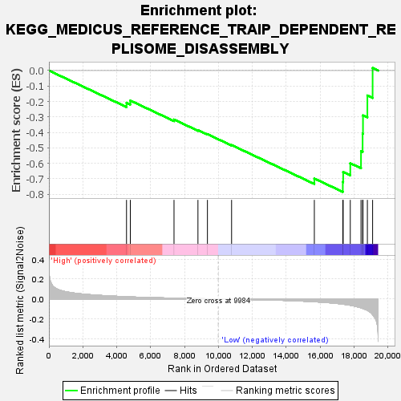
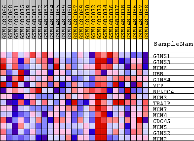
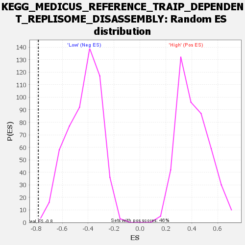

| Dataset | WG6v3.CPT1A.cls#High_versus_Low.CPT1A.cls#High_versus_Low_repos |
| Phenotype | CPT1A.cls#High_versus_Low_repos |
| Upregulated in class | Low |
| GeneSet | KEGG_MEDICUS_REFERENCE_TRAIP_DEPENDENT_REPLISOME_DISASSEMBLY |
| Enrichment Score (ES) | -0.7845805 |
| Normalized Enrichment Score (NES) | -1.8223585 |
| Nominal p-value | 0.0018552876 |
| FDR q-value | 0.05491064 |
| FWER p-Value | 0.106 |

| SYMBOL | TITLE | RANK IN GENE LIST | RANK METRIC SCORE | RUNNING ES | CORE ENRICHMENT | |
|---|---|---|---|---|---|---|
| 1 | GINS1 | GINS1 | 4578 | 0.022 | -0.2083 | No |
| 2 | GINS3 | GINS3 | 4802 | 0.021 | -0.1940 | No |
| 3 | MCM6 | MCM6 | 7380 | 0.008 | -0.3167 | No |
| 4 | UBB | UBB | 8792 | 0.004 | -0.3850 | No |
| 5 | GINS4 | GINS4 | 9352 | 0.002 | -0.4114 | No |
| 6 | VCP | VCP | 10777 | -0.002 | -0.4818 | No |
| 7 | NPLOC4 | NPLOC4 | 15659 | -0.028 | -0.6981 | No |
| 8 | MCM3 | MCM3 | 17338 | -0.052 | -0.7202 | Yes |
| 9 | TRAIP | TRAIP | 17360 | -0.053 | -0.6560 | Yes |
| 10 | MCM7 | MCM7 | 17780 | -0.063 | -0.5993 | Yes |
| 11 | MCM4 | MCM4 | 18412 | -0.089 | -0.5212 | Yes |
| 12 | CDC45 | CDC45 | 18507 | -0.095 | -0.4084 | Yes |
| 13 | MCM5 | MCM5 | 18529 | -0.096 | -0.2898 | Yes |
| 14 | GINS2 | GINS2 | 18788 | -0.114 | -0.1613 | Yes |
| 15 | MCM2 | MCM2 | 19097 | -0.156 | 0.0167 | Yes |

